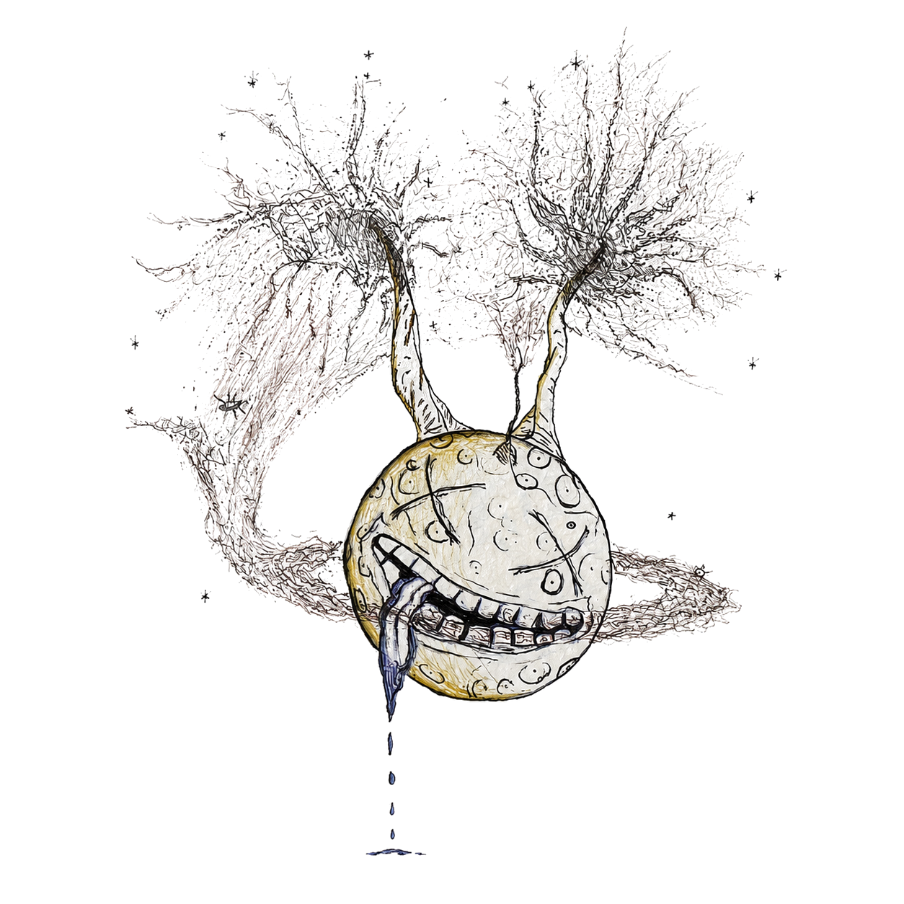

Cultural context, psychonaut philosophy, modern research revival, and speculation around the psychedelic experience
We appear to be entering a new psychedelic era, not only a scientific renaissance, but a social awakening. For over a decade, I have tried in my own way to help move that conversation forward: toward education, destigmatization, responsible inquiry, and a deeper respect for the transformative potential of these compounds.
Clinical trials, pharmacology, neuroscience, safety studies, and reproducible biological mechanisms belong in the strongest evidence category.
Books, talks, ceremonies, underground practice, art, music, law, stigma, and public figures help explain how psychedelic meaning travels through society.
Philosophical interpretations can be valuable, but they should not be presented as settled biology or accepted clinical evidence.
Psychedelics have moved through many overlapping worlds: Indigenous traditions, ceremonial use, underground therapy, counterculture, psychonaut communities, harm-reduction education, decriminalization campaigns, and modern clinical research. The current renaissance did not appear out of nowhere. It grew from decades of people preserving knowledge, challenging stigma, documenting risks, building communities, and asking whether these experiences could be approached with more seriousness and care.
Today, psilocybin sits in a complicated public space. It is being studied in clinical and neuroscience settings, discussed in recovery and mental-health contexts, and explored in therapy-adjacent wellness spaces. At the same time, legal status, medication interactions, psychological vulnerability, commercialization, and cultural appropriation remain real concerns. A balanced view can acknowledge promise without turning promise into certainty.
Terence McKenna was one of the most influential cultural and philosophical voices in late twentieth-century psychedelic discourse. He helped popularize conversations around psilocybin mushrooms, DMT, novelty, the Logos, machine elves, Timewave Zero, and the "Stoned Ape" hypothesis.
The "Stoned Ape" hypothesis should not be presented as accepted science. It has influenced decades of speculation and cultural discussion about psychedelics, consciousness, language, and human evolution, but it has not become a rigorous scientific account of human origins.
McKenna's legacy is mixed but culturally significant. His greatest influence may not have been scientific proof, but language: he gave many people a vocabulary for thinking about altered states as philosophically serious rather than merely recreational.
A recurring McKenna theme is that psychedelics are culturally threatening not only because of questions about physical safety, but because they can disrupt fixed beliefs, inherited assumptions, and obedience to consensus reality. This is the idea behind the video clip often shared as McKenna talking about drugs "waking people up" and institutions losing their nerve.
McKenna was arguing that psychedelic experience can make people less willing to accept inherited social programming at face value. Whether one agrees with him or not, this is part of why his language still circulates in psychedelic culture.
Mycologist Paul Stamets has suggested that fungi may respond to sound and vibration, including the rhythms created by music, dancing, and human gathering. This idea sits in an interesting space: part poetic ecology, part emerging science.
While the broader cultural interpretation is poetic, the narrower question is experimentally testable: can sound, vibration, or mechanical stimulation influence fungal growth under controlled conditions? Until stronger sources are added, the idea should be treated as suggestive rather than settled. In the poetic version of the idea, celebration is not separate from nature; it is something the living ground may physically feel.
The modern psilocybin renaissance is not only a story of molecules, receptors, and clinical trials. It is also a story of culture: language, art, music, ceremony, law, stigma, healing, and the people who kept these conversations alive when mainstream institutions dismissed them.
Science can help clarify what these compounds do. Culture helps explain why they matter.
This section separates cultural sources from scientific sources. Some items are primary works; others are secondary commentary or review material. The open questions mark places where better primary sources or experimental studies would strengthen the page.